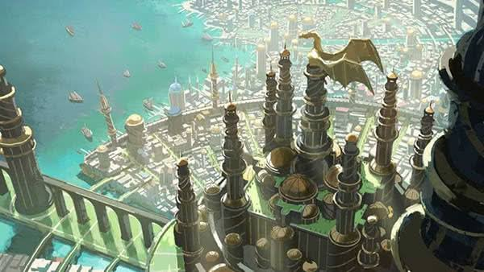
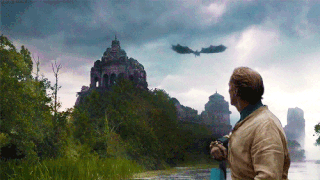
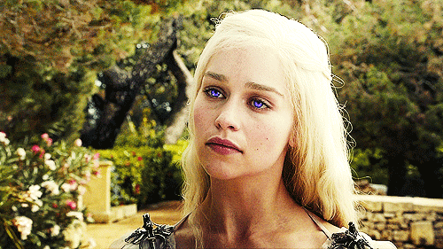

Valíria
O império valíriano
 Os valirianos
Valíria, também chamada de Velha Valíria, é uma cidade em ruínas de Essos. No passado, foi uma vibrante cidade e capital do poderoso Império Valiriano.
Os valirianos são famosos por seus cabelos prateados e dourados, e seus olhos violeta, roxos ou púrpura, essas características não são encontradas em nenhuma outra raça de humanos no Mundo Conhecido. Seus cabelos podem variar desde o branco, até o prata, dourado ou loiro.
O poder de Valíria baseou-se na domesticação e utilização de dragões na guerra, que os valírianos descobriram na cadeia de vulcões conhecidos como os Quatorze Chamas. Usando dragões, destruiram os exércitos de nações opostas e conquistaram uma grande quantidade de territórios em Essos. Seu império, o Povo Livre Valiriano, estendeu-se através de grande parte das modernas Cidades Livres e até mesmo para a ilha de Pedra do Dragão do Mar Estreito. No entanto, Valíria nunca tentou uma invasão em Westeros, que foi considerada terras pobres. Por mais de 5.000 anos, Valíria era a capital da maior civilização que a humanidade nunca tinha visto, o coração de um império que governou metade do mundo conhecido.